Introduction/Background
Human beings are social animals and there are lots of events going on in society. People carry those social issues through news articles, and since numerous different issues are happening, these news articles have a lot of different categories. Classification of documents in these categories can bring huge advantages to the application. It can analyze users’ interests in news articles and recommend related articles that users might find useful, or it can measure the number of articles on different topics to evaluate the hottest issues that happened in a certain timeline and so on.
Our team aims to implement document classification models of news topics due to the massive application possibilities it can bring. We use the AG news dataset which is a collection of more than 1 million new articles gathered from more than 2000 news sources in more than 1 year of activity.
Problem Definition
The focus of our project is to accurately classify the topic of the news article. We plan on using both supervised and unsupervised Machine Learning algorithms for classification. We aim to implement document classification models of news topics due to the massive application possibilities they can bring.
Dataset
The data we are using is called AG news. The dataset contains 120,000 training datasets containing a short header for a news article and a corresponding label for the header. There are four possible classes for the labels, World, Sports, Business, and Sci/Tech. Since the dataset comes with the ground truth labels, we can try to come up with a classification model that will correctly label an article header. We can also try different clustering algorithms to see if we can find any interesting structures within the articles as it’s rather reasonable to believe that articles covering different topics would have a different distribution of words.
There are a little over 4.6 million word tokens in the data with roughly 165,000 unique word tokens where the word tokens that appear most frequently are words like common stop words such as “the”, “to”, and “a". If we use all these word tokens the dimension of our dataset would be 165,000 with only 120,000 datasets which is not a good thing to have.
Looking at the frequency of words, we can also see that roughly half, 46.5%, of the words only appear once in the entire corpus. These words include names such as “Bazil” and “Tearaway” which only gets used once in the entire dataset because a specific article mentions them. These words are so rare they don’t really contribute to building a meaningful classifier as the chance that they’ll appear in the test dataset is rare. So by having these extremely rare words in our training data, we are in a way overfitting our model that may perform well on the training set but won’t do well on our test dataset.
Data Exploration
Word Cloud or Tag Clouds is a visualization technique for texts natively used for visualizing tags or keywords. In the Word Cloud, the size of each word is based on the frequency of words in each document. So, we can not only explore the frequency of words but also by doing so, we can figure out the thesis of the class.
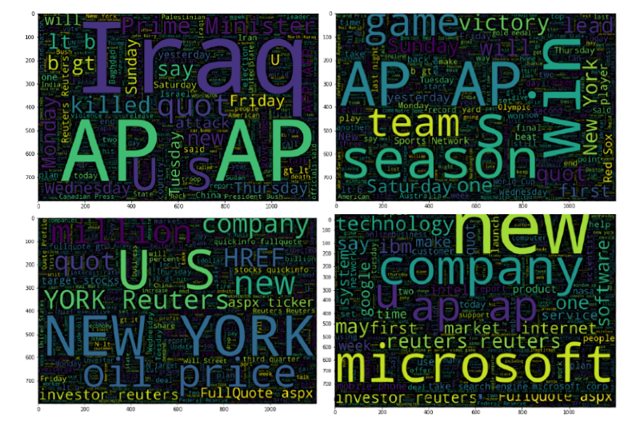
<Figure 1> 4 Word Cloud describes classes. The text size is based on the frequency of words.
These 4 Word Cloud plots show the result. In the first plot, we can see various countries including the largest word, Iraq. We can conclude that the first label is about world news. The second plot is composed of various sports-related words and times such as season, win, and game. Also, we can see various sports-related words like Olympic, World Cup, and Red Sox. Based on this information, we can conclude that the second class is about sports. The most notable words in the third plot are US, New York, and oil price. Not only that, the third plot shows various business-related words such as investors, company, and million. We can see that the 3rd class news is about business. The last plot shows various tech companies including Microsoft, IBM, and Google. We can confidently assume that the last class is about Science and Technology.
Data Preprocessing
Stemming and Lemmatization
Another type of data preprocessing that we need to perform is stemming and lemmatization. A lot of word tokens in our documents convey the same meaning but have varying forms due to grammatical reasons. The word “learn” would be a good example of this. Both the phrases 'learn' and 'learns' have the exact same meaning, however, they are used in different scenarios to be in line with English grammar. Treating them as separate entity leads us to have more dimensions to our data than what our data actually conveys. By lemmatizing them into their basic form of 'learn', we can maintain the meaning behind the word while reducing the dimension of our dataset.
For example, there are 121, 15, 64, and 114 occurrences of words “learn”, “learns”, “learning”, “learned” respectively before lemmatizing and there are 407, 0, 20, 0 occurrences after lemmatizing. After applying a similar process to all word tokens in our data, we end up with 78,362 unique words in our data which is less than half of what we started with.
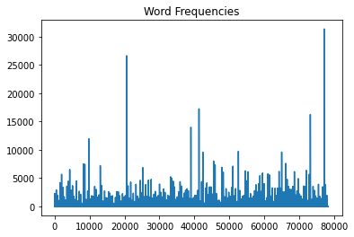
<Figure 2> Word Frequencies
Vectorizing
One of the challenges in classifying documents is that since the dataset we are dealing with is simply a string of words, the machine learning models that we use cannot handle words as they are. So we need a way to represent them that our machine learning models can understand and use. Since our models can only understand numerical data, we need to be able to represent the strings of words as a series of numbers for each instance of data.
Another thing to keep in mind is that even though there may be many different ways to represent words as numerical values, it would be very helpful if the numeric representation of the words actually helps us maintain how the occurrence of different words represents different classes of documents in our dataset. With that in mind, there are two possible ways to represent words as numeric vectors that our models can use.
Count Vectorizer
Count vectorizer is a very simple way to convert a string of words into a vector of numbers that represent the frequency of how certain words occur in our dataset. As the name suggests we would simply be counting the occurrence of each word in our dataset at the document level, and then represent our data as a vector of frequencies.
To give a concrete example, we can take the sentences “The quick brown fox jumps over the lazy dog” and “The lazy brown fox jumps over the lazy dog” and represent them as follows
| The | Quick | Brown | Fox | Jumps | Over | The | Lazy | Dog | |
|---|---|---|---|---|---|---|---|---|---|
| Sent 1 | 1 | 1 | 1 | 1 | 1 | 1 | 1 | 1 | 1 |
| Sent 2 | 1 | 0 | 1 | 1 | 1 | 1 | 1 | 2 | 1 |
<Table 1> Using this method we can quickly convert strings of words into a vector of numeric values that our models can use as inputs.
There are two different types of Count Vectorizer one can use, one being a binary vectorizer that tracks whether a specific word has appeared in a document or not and the other being a regular count vectorizer that gives us the count of how often a specific word appeared in a document. If one believes that the frequency of the words imparts some meaningful representation then a binary count vectorizer should not be used. We tested both methods out empirically to see which one gives a better performance overall instead of picking one from the start.
Term Frequency Inverse Document Frequency
Similar to Count Vectorizer, TF-IDF can also convert a string of words into a vector of numeric values that our model can use. As the name suggests, Term Frequency is one of the components of the method which is essentially equal to the Count Vectorizer. However, unlike count vectorizer, TF-IDF helps us figure out words that are important by also accounting for inverse document frequency.
Document Frequency simply represents how many of the documents in our dataset contains a specific word
Because we are dividing N by the document frequency, we are essentially making it so that terms that appear in every document have less weight in our data representation. When we use Count Vectorizer or Term Frequencies, we are in a lot of ways treating each word equally, however, IDF helps us represent words with different weights that can weigh down the terms if the terms appear very frequently and weigh up the terms if they are relatively rare.
This makes sense if one thinks about common stop words such as ‘The’ or ‘a’. These words pretty much appear in almost every English sentence and thus do not help us classify or cluster our documents. So words that show up often in our documents will have lower TF-IDF values whereas words that show up less frequently will have higher TF-IDF values.
This is great as TF-IDF helps with turning a string of words into a numeric representation while also giving us a more nuanced way of representing our words and what they actually represent in our data.
Methods
Models and Cross-Validation
Now that we’ve preprocessed our data and we need to have a model pipeline built out. In order to test out different models and vectorization algorithms, it’s important to use cross-validation to test out different hyperparameters and algorithms.
For the supervised learning, we decided to use some traditional machine learning models such as Naive Bayes, Logistic Regression, Random Forest, and K-nearest neighbors. Also, we used character-level convolutional networks for text classification. For the clustering, we used k-means clustering with clustering along with AgglomerativeClustering, and t-SNE(t-distributed stochastic neighbor embedding) to visualize the result of k-means clustering and agglomerative clustering.
The hyperparameters used are relatively straightforward for models such as Naive Bayes or KNN classifier as there are only a handful of hyperparameters to use such as how much additive smoothing such as Laplace smoothing we should try adding to our data to deal with potential sparsity in our data such as words with 0 counts.
As for KNN, for every data point that we have the algorithm is essentially trying to find K number of data points that are most similar and using their labels as a class label for the data we are trying to predict, the number of neighbors is the most important hyperparameter that we need to tune. So in order to find the value that gives us the best performance, we tested out 10 different values from 3 to 50.
For Logistic Regression, there are a few hyperparameters that we tried out. The first one is the type of regularization penalty that we used. We have an option of either using the L2 norm or the L1 norm which changes the way the model is fit. L1 norm can potentially give us sparse feature representation that drives the weights for some features to be 0 while L2 norm keeps all the features in the model. The elastic net penalty was also tested out that treats our model’s penalty as a convex combination of L1 and L2 penalties. Lastly, different values for the strength of regularization were tested out to find the set of hyperparameters that have the best predictive power.
For Random Forest, we have two big hyperparameters to tune, one being the number of models we fit and the other being the depth of the model. Random Forest is an ensemble model which means that it fits many models with different initial splits in the hopes that by having a large number of predictors, we can have a more robust predictive performance. The other hyperparameter, maximum depth, controls how many features the model will use. This is an important hyperparameter as Decision Trees are known to completely overfit given a very large feature size. So the rationale behind this hyperparameter is that by limiting the number of splits, we can prevent our model from overfitting.
There have been several approaches using convolutional neural networks for text classification. One of the most popular approaches is “Character-level Convolutional Networks for Text Classification”. They proposed a convolutional neural network with 6 convolution layers followed by 3 fully connected layers. Max pooling is used to reduce the feature dimensions (the authors of the paper emphasized that they were not able to train deep convolutional networks without pooling layers). Since we are not familiar with implementing neural networks (yet), we have used the public implementation from here.
t-SNE(t-distributed stochastic neighbor embedding) is a dimensionality reduction method with minimum structural information. When compared to other dimensionality reduction with methods such as PCA, it is superior to distinguish functional states of model systems with minimum energy and mechanistic analysis. Using the t-SNE method, we plotted the news data to 2D scatter plot and checked the hued clusters using the k-means clustering result.
One of the unsupervised learning approaches we could take from this dataset is K-means. Using tf-idf vectorized dataset, disregarding all the information about labels for each data, we could do the K-means approach. The following figure shows the inertia of the K-means algorithm with respect to different values of k.
Results and Discussion
Naive Bayes / Logistic Regression / Random Forest / KNN (Supervised Learning)
For cross-validation, accuracy was used to track model performance. Of the 4 models used, Logistic Regression had the highest accuracy overall on the test dataset with 91.2%. The hyperparameters used were the “L2” norm with a regularization parameter of 3.34. Similar accuracy can be achieved using the “L1” norm as well as the accuracy with the “L1” norm came out to be around 90.67%.
Naive Bayes had the second-best performance behind Logistic Regression with roughly 90% accuracy using simple Laplace Smoothing by adding 1 to all occurrences of words.
Next cross-validation was used on KNN with varying numbers of neighbors. The model using 18 neighbors had an accuracy of roughly 90%. This is quite similar to Naive Bayes, but since the KNN model would need to find 18 closest neighbors during the test time, it has a higher computation time compared to other methods during test time.
Lastly, Random Forest had the lowest test accuracy at around 88%. For Random Forest, maximum depths of 5000 had the best performance which was the maximum value for the hyperparameter tested. Essentially the more the feature the model used, the better the performance.
Exactly the same process was applied to test out how count vectorizer impacts the accuracy metric of our models. For Naive Bayes and Logistic Regression, the accuracy dropped by about 1 percentage points giving us roughly 89% and 90% for each respectively. Interestingly for Naive Bayes, binary count vectorizer lead to the highest accuracy whereas non-binary count vectorizer led to the highest accuracy for Logistic regression.
Interestingly, there was no performance drop for Random Forest however there was a huge drop in accuracy for KNN classifier. The highest accuracy for KNN came out to be around 62% which is roughly 28 percentage points lower than the model using TF-IDF. Given that KNN looks for data points that are similar to the ones being classifiers, we suppose that the count vectorizer does not give the data points enough of distinctive representational power for the model to pick good neighbors that help with the classification tasks.
Lastly, the precision was used to fit a model instead of accuracy, but the model performance was quite similar to the ones fit with accuracy. Just like with accuracy, Logistic regression had the highest precision while Naive Bayes classifier had the second highest precision. Also interestingly the set of hyperparameters with the highest accuracy also had the highest precision across the board.
| Naive Bayes | Logistic Regression | Random Forest | KNN | |
|---|---|---|---|---|
| Accuracy | 90.194 | 91.15 | 88.54 | 90.51 |
| Precision | 90.158 | 91.14 | 88.49 | 90.30 |
| ROC_AUC | 97.785 | 98.29 | 97.77 | 98.12 |
<Table 2> The top performance for each of the 4 models.
The models’ performance is ultimately the most important aspect of model fitting as our goal is to classify news articles; however, an interesting thing to look at is which features the models find useful for classification. One of the ways to figure this out is to look at which features reduce the loss the most when used by random forests while it fits models. The plots below show the normalized reduction in loss of models that split on each of the feature and it’s quite obvious from the plot that some of the features are more helpful than the others.
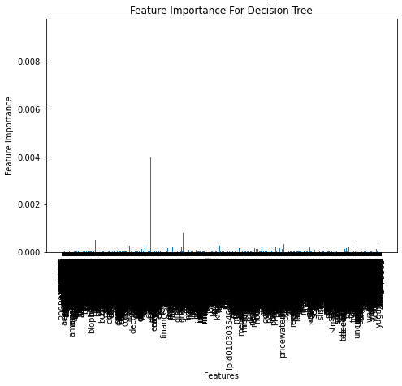
<Figure 3> Feature Importance
By only keeping features that reduce the loss more than 0.0005 in normalized terms, we can see that there are quite a handful of words that are helpful.
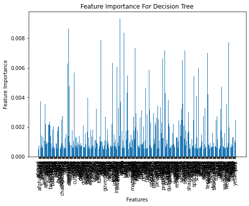
<Figure 4> Feature Importance reduce the loss more than 0.0005
The top 20 words that reduce the loss the most are terms like ‘iraq’, ‘company’, ‘kill’, ‘game’, ‘win’, ‘microsoft’, ‘season’, ‘price’, ‘team’, ‘president’, ‘say’, ‘software’, ‘inc’, ‘coach’, ‘internet’, ‘stock’, ‘oil’, ‘cup’, ‘minister’, ‘league’.
Given that the 4 classes of news articles we have are ‘World’, ‘Sports’, ‘Business’ and ‘Sci/Tech’, it makes perfect sense that these features are helpful. Terms such as ‘win’, ‘season’, ‘team’, ‘coach’, ‘cup’ most likely are associated with ‘Sports’ news whereas terms such as ‘stock’, ‘oil’, ‘price’, would be associated with ‘Business’.
With both countvectorizer and tf-idf vectorizers, the presence of these words in an article would most likely signal that they belong to a certain class of news articles and our Random Forest model was able to exploit this association to come up with a relatively effective classifier.
CNN-based Approach (Supervised Learning)
To train the model, we used LR 0.0001 with batch size 32. Around 5-6 epochs were required to reach the peak training/test accuracy, 88.5%. We used checkpoints to understand how the loss and accuracies change over time during the training.
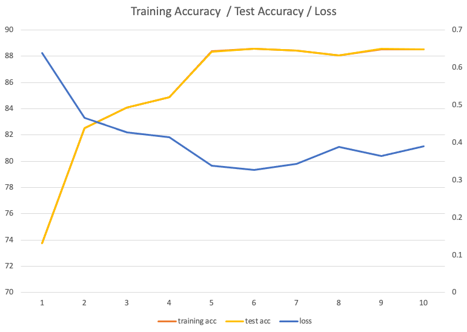
<Figure 5> A line graph explaining how the loss and accuracies change over time during the training.
In the following, we summarize a few interesting observations.
- We first trained the model from scratch using a MacBook Pro’16, 2019. It took more than a few hours to finish just a few epochs. It was very difficult for us to test different hyperparameters due to the long training time. To resolve this issue, we have tried to use a machine with two NVIDIA Titan RTX GPUs to accelerate the training with data-parallel fashion and observed that the training was able to finish more than a hundred epochs in a few hours. We have heard a lot that the improvement in HW is one of the critical reasons why DL has become successful these days, but this was our first time to actually experience the power of GPUs.
- We were expecting the model to be overfitted after 100 epochs since the loss/accuracy reached a plateau around 5 epochs. Interestingly, even with the model trained with 100 epochs, the accuracy was similar to the accuracy of a model trained with 5 epochs, which seems contradictory to our intuition. It might be possible that the learning rate is too high to overfit the model or the problem is easy enough to achieve ~90% accuracy.
- Even though the model was able to achieve pretty high accuracy, it is still not straightforward how CNN can learn the pattern of “text” data. Compared with other approaches, the most surprising fact is that this CNN model does not require explicit “words”.
- The training was very sensitive to the learning rate. When we use 0.001 instead of 0.0001 as the learning rate, the peak accuracy was only 25%, which means it is not learning anything at all considering that we only have 4 labels. This shows the importance of hyperparameter tuning.
K-means Approach
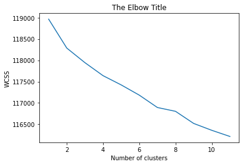
<Figure 6> The Elbow method for K-means clustering to find the best K.
Even though we know from the ground truth that the articles have 4 different clusters (i.e. 4 labels), the elbow method does not show k = 4 as the best k to be chosen. This shows the fact that K-means clustering does not work well with the tf-idf vectorized data; each article’s bag of words does not carry enough information for clustering.
Since we have ground truth that k = 4 is the right clustering number, we can calculate the train and test accuracy for KMeans clustering for case k = 4 only.
We got this train and test accuracy by mapping ground truth labels to randomly generated labels from KMeans clustering algorithm and compared it with predicted labels.
Train accuracy shows 46.35% and test accuracy shows 56.32%. This result further supports the fact that each article’s bag of words without label information does not carry enough information for clustering.
Agglomerative Clustering
The other clustering method is hierarchical agglomerative clustering. There are several ways to find the optimal number of clusters and we used the dendrogram. Dendrograms represent the hierarchical relationship between the data-points. It shows the arrangement of the clusters resulting from the corresponding analysis and it is used to observe the result of hierarchical agglomerative clustering.
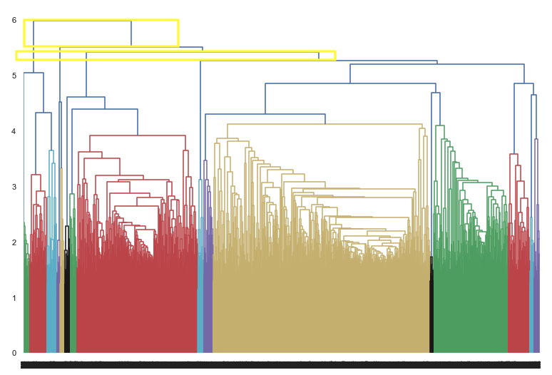
<Figure 7> The dendogram of agglomerative clustering
The optimal number of clusters is judged based on the height of each hierarchy. In the above image, 2 is observed as the optimal number with the max-height. Max height hierarchy is chosen based on the fact that it represents the maximum Euclidean distance between the optimal number of clusters. Based on the above image, 4 which is the number of news label is with the second max height. We can conclude that clustering with 4 groups is the second optimal option. Agglomerative clustering was executed using 2 and 4.
SVD Dimensionality Reduction
Given that we have data with very large dimensions, one of the ways we can try to streamline data processing and modeling fitting is using some sort of dimensionality reduction to reduce the size of the dimension of the data.
SVD was used to reduce the dimension of the data as we had some sparsity in our dataset. SVD is similar to PCA in that it projects the data into a lower-dimensional space while trying to retain the essence of the data.
In our pipeline, SVD was added right after vectorization so that we can use cross-validation to see what size of dimension leads to the best performance.
For the Logistic Regression model, the dimension of 500 was selected from a range of 2 to 500. This led to the data retaining roughly 31% of the variance in the original data. 500 is quite small compared to the 21414 dimensions the original data had, and what’s even more interesting is that the model was able to get close to 89% accuracy on the test dataset. This is quite impressive given that the full dataset gave us an accuracy of roughly 91%. So by reducing the dimension of the data from 21414 to 500, we were still able to retain most of the performance of the data. This helps quite a lot during test time as the size of the model is undoubtedly smaller making it fit in systems with smaller memory.
A scatter plot showing the first 2 classes using features 7 and 8 is shown below. As one can see even though there are a lot of points that overlap, there are regions in the plot where the data is clearly separated. We can clearly see the classes clustering rather nicely. This shows that projecting the data onto the lower-dimensional space is quite promising.
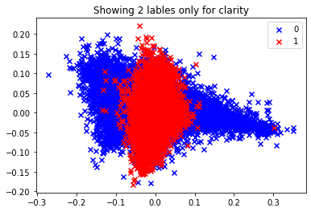
<Figure 8> A scatter plot showing the first 2 classes
A plot with the same features but with all 4 labels is shown below. Similar to the case with 2 classes, there is a lot of overlap but still, there are clear clusters that different models will be able to exploit to fit a classification model.
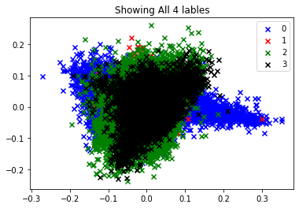
<Figure 9> A scatter plot showing 4 labels
t-DSN Dimensionality Reduction
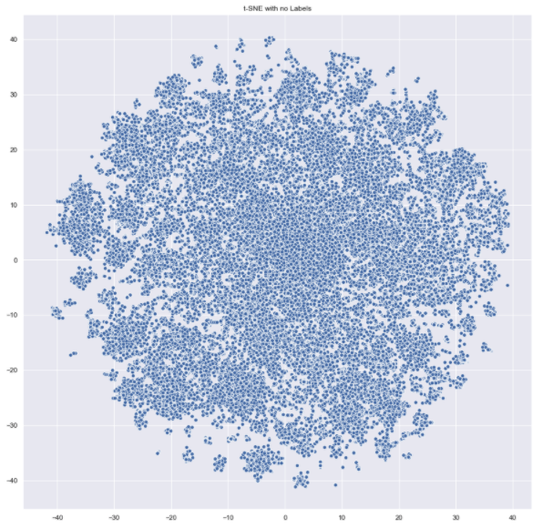
<Figure 10> t-DSN reduction visualization
Following the SVD dimensionality reduction, we also tried t-DSN dimensionality reduction to draw to 2D scatter plot. The reduction result is different from SVD. The clustering result will be provided with K-Means clustering method.
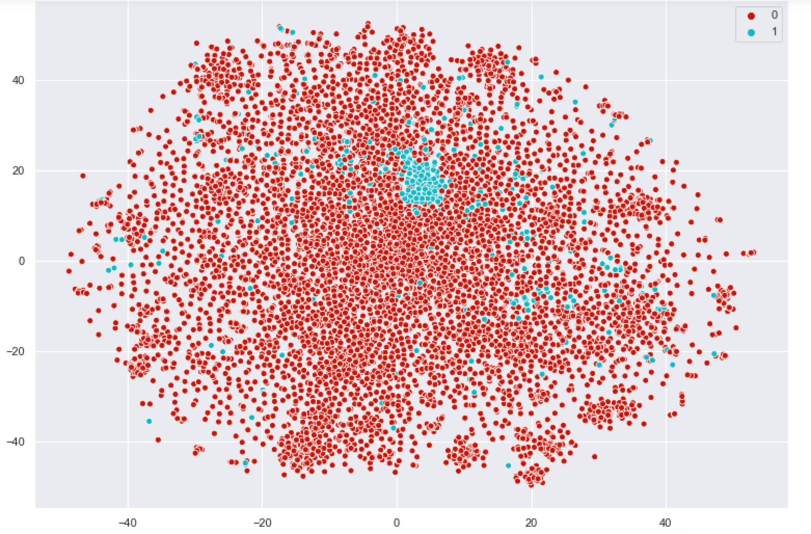
<Figure 11>Visualization 2 group clustering using t-SNE dimension reduction.
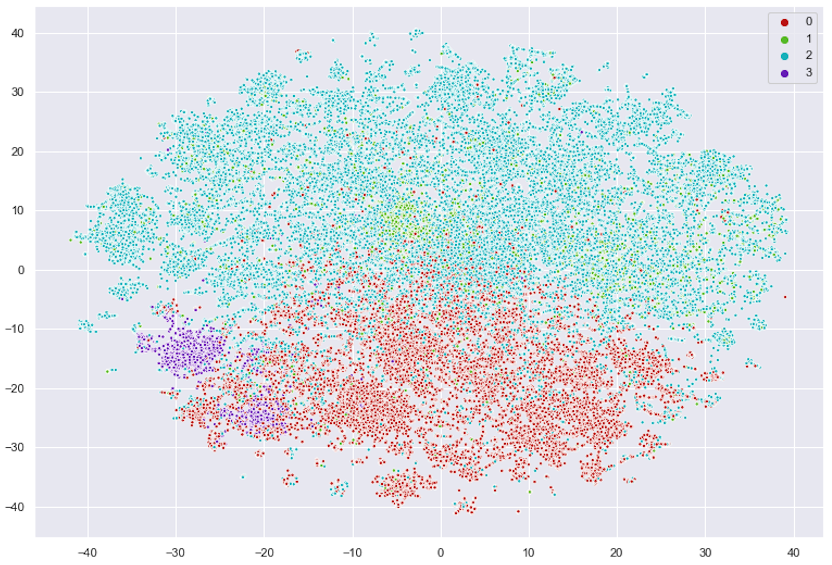
<Figure 12>Visualization 4 group clustering using t-SNE dimension reduction.
Those 2 above images represent 2 and 4 clustering results. In the second plot, it is observed that most news texts are divided except for some outliers.
Clustering result shows that it does not work well even with agglomerative clustering. For example, cluster 1 is not clearly divided from cluster 2. The reason that this agglomerative clustering does not work well also goes with the reason we concluded from the previous unsupervised method, KMeans clustering. Each data point in the scatter plot (i.e. articles) without label information does not carry enough information for clustering so that the scatter plot shows non-existence of a clear division line among clusters. In addition, we cannot assure it is accurate clustering when compared to the supervised learning classification algorithms since the number of data for each group is apparently different.
Conclusion
Our goal was to come up with a modeling process that would effectively classify news articles into one of the 4 pre-specified classes. Given that the data is in the form of words, we needed to explore some vectorization methods such as countvectorizer and tf-idf vectorizer which are similar but have some key differences in how they operate.
Given those 2 vectorizers we also tested out 4 major traditional supervised learning algorithms such as Logistic Regression, Naive Bayes classifier, Random Forest and K-nearest neighbors. Of these Logistic Regression performed the best with test accuracy of roughly 91%. The other models were not too far behind with Naive Bayes and Random Forest both achieving accuracies of 90% and 88%.
Given that we have more than 20k words in our corpus, we explored some dimension reduction method with PCA and we were able to show that even if we reduce the dimension of our model to 500, we can attain roughly 89% accuracy which is quite impressive given that the full dataset contains 20k unique words.
We also explored how the model uses the vocabs by looking at the feature importance from Random Forest model which represents how much the loss reduces after splitting on the feature. It was no surprise to see terms such as ‘iraq’, ‘game’, ‘win’, ‘microsoft’, ‘price’, ‘stock’, and ‘oil’ rank so highly as our dataset has labels ‘World’, ‘Sports’, ‘Business’, ‘Sci/Tech’.
Using CNN-based approach, we also achieved an accuracy of 88.5% which is comparable to the previous approaches. We expect to be able to achieve higher accuracy than the conventional ML methods using more complicated models.
For the unsupervised learning, we executed kmeans and agglomerative clustering. Our goal was to find the optimum clustering numbers and with kmeans, we could not find the optimal numbers with the elbow method and we concluded that it is not appropriate to use kmeans but instead we tried hierarchical; agglomerative clustering.
With both the accuracy using agglomerative clustering and plots, the optimal clustering number is 4. The plots show unclear division lines among clusters and the number of each cluster is imbalanced unlike the original dataset, with unsupervised learning. However, with the fact that the optimal number 4 is the same with the original labels, the unsupervised learning for the news data was advantageous to find the pattern of data and similarity of each cluster.